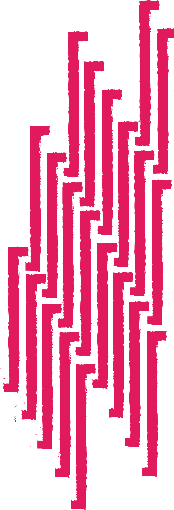

በዘርፉ የተጠና ጥናት ስለመኖሩ እርግጠኛ ባልሆንም የትዝታ ፅንሰ ሀሳብ በብዛት ተንሰራፍቶ ከሚታይባቸው ሀገሮች ኢትዮጲያ ቀዳሚ ሳትሆን አትቀርም እላለሁ። ለዚህ ትንሹ ማሳያዬ ደግሞ የተለጠጠው ሀዘናችንና ራሱን ችሎ የቆመው "ትዝታ" የተሰኘው የሙዚቃ ስልታችን ነው። ለዛሬ ፅሁፌ መነሻ የሆነኝ ሀዘን ሳይሆን በደስታ ያለፉ የልጅነትና የአፍላነት ዘመኖቼ ናቸው። ስለ ትዝታ ስናወራ በአፍታ ብዙ ነገሮች ወደ አዕምሯችን ይጎርፋሉ። የወደድናቸውም የጠላናቸውም ትውስታዎች በተርታ ቅደም ተከተላቸውን ጠብቀው ይፈሳሉ። ትዝታን ከምግብ ፣ ከመጠጥ ፣ ከጨዋታ ወይም ከቤተሰብ ጋር አያይዘን ብናነሳውም ትዝታ ከሙዚቃ ጋር ያለው ቁርኝት ግን ገኖ ይወጣል። እኔም ዛሬ ወደኋላ ሄጄ ትዝታዎቼን በጊዜው ከነበሩ ሙዚቃዎች ጋር እያዋዛሁ ለመፃፍ ወደድኩ። ያደኩት ዓለማዊ ሙዚቃ በብዛት በሚደመጥበት ቤተሰብ ውስጥ ነው። ታላላቆቼ የአስቴር አወቀን ፣ የጥላሁን ገሰሰን፣ የመሀሙድ አህመድን ፣ የአሊ ቢራን፣ የሀመልማል አባተን ፣ የሒሩት በቀለን ፣ የብዙነሽ በቀለን ፣ የቴውድሮስ ታደሰን እና የሙሉቀን መለሰን ሙዚቃዎችን በመስማት ነበር ጊዜአቸውን የሚያሳልፋት። በተለይ በዕረፍት ቀናትና በክረምት ወራት ቤት ውስጥ በነበረን አንድ የሶኒ ካሴት ማጫወቻ ቴፕ እነዚህን ሙዚቀኞች ያለ ዕረፍት እንኮመኩም ነበር። እኔም ገና በለጋነቴ ነበር ለነዚህ የሙዚቃ ባለሙያዎች ፍቅርን እያካበትኩ የመጣሁት። እድሜዬ ከፍ እያለ ሲሄድ እኔም በተራዬ ለጆሮዬ የተመቸኝን የሙዚቃ ስልት መምረጥና መስማት ጀመርኩ። በወቅቱ ሙዚቃ ከመዝናኛነት ባለፈ የወደፊት የህይወቴ አካል እና የትዝታዎቼ መፍቻ ቁልፍ መሆኑን ባላውቅም እንዲሁ ዝም ብዬ የወደድኩትንና ለጆሮዬ የጣፈጠኝን እሰማ ነበር። በተለይ እድሜዬ አስራዎቹ መጀመሪያ ላይ ሲደርስ የወጣው የእጅጋየሁ ሺባባው / ጂጂ "ጉራማይሌ" አልበም ቁርስ ፣ ምሳ እራቴ ሆኖ ነበር። በጂጂ ፍቅር የተለከፍኩት በጉራማይሌ አልበም ቢሆንም ከዛ በኋላ ግን ወደ ፊትና ወደ ኋላ በመሄድ ሙሉ አልበሞቿን ለማድመጥ ችያለሁ። ለኔ በግሌ ጂጂ የኢትዮጲያ ዘመናዊ ሙዚቃ ፈርጥ ብቻ ሳትሆን ፣ ለኔ ትውልድ የሙዚቃ ጥራት እና የበሳል ግጥምና የዜማ ድርሰት ውሃ ልክ ነች። ከጂጂ ቀጥሎ በሷ ደረጃ የመጣ ሙዚቀኛ ለረጅም ጊዜ አልነበረም ብል ማጋነን አይሆንብኝም፤ ዘሪቱ በአዲስ የሙዚቃ ስልት ብቅ እስክትል ድረስ። ዘሪቱ ቀላል የሚባሉ ግጥሞችን ከበድ ባሉ ለሷ ግን በቀለሏት ዜማዎች አዋህዳ ስትመጣ የዘመናዊ የኢትዮጲያ ሙዚቃ አፍቃሪዎች ልብ ውስጥ ለመግባት ጊዜ አልፈጀባትም። ዘሪቱ በራሷ ስም ሰይማ በ1998 መጨረሻ አከባቢ አልበሟን ስታወጣ እኔ በጊዜው የ10ኛ ክፍል ተማሪ ነበርኩ። ያ ማለት በአፍላነት እድሜዬ ላይ ነበር ምገኘው በመሆኑም የአፍላነት ትዝታዎቼ ... የመጀመሪያ የፍቅር ፣ የመጀመሪያ መሳሳም እና የመጀመሪያ ልብ ስብራት በዘሪቱ ሙዚቃዎች የታጀቡ ነበሩ። በትልቅ ደረጃ የተዘጋጀ የሙዚቃ ድግስ ላይ ስገኝም "ጉዞ ዘሪቱ" ለኔ የመጀመሪያዬ ነበር። ከላይ የጠቀስኳቸው የኔ እውነታዎች ድርጊቶችና ክንውኖች ጊዜ ጠብቀው ዛሬ ላይ ትዝታ ሆነዋል። እኔ በልጅነቴ ትዝታዎችን ማከማቸት ስጀምር በአስቴር አወቀ እና በመሀሙድ አህመድ ከፍ ስልም በጂጂ እና በዘሪቱ ነበር። አሁን ላይ ሆኜ እነዚህን ሙዚቃዎች ስሰማ ሁሌም ወደኋላ ወስደው የህይወት ጉዞዬን ፣ ደስታዬን እና ሀዘኔን ፣ ወደ ህይወቴ የገቡ እና የወጡ ሰዎችን ያሳዩኛል። 1970ዎቹ እና 1980ዎቹ የኢትዮጲያ ሙዚቃ የገነነበት ወቅት እንደነበር የማይካድ ሀቅ ነው። በግሌ የደረስኩበት 1990ዎቹ እና የሚሊኒየሙ የመጀመሪያ አመታት በኢትዮጲያ የዘመናዊ ሙዚቃ ታሪክ ውስጥ ጉልህ ቦታ አለው ብዬ አምናለው። በነዛ አመታት ከመቼውም ጊዜ በላይ የሙዚቃ አልበሞች በብዛትና በጥራት ይወጡ ነበር። ጊዜው የኢትዮጲያ የሙዚቃ ገበያ የተነቃቃበት ብቻ ሳይሆን በራሳቸው ቀለም በመጡ የሙዚቃ አቀናባሪዎች፣ የግጥም እና ዜማ ደራሲዎች እንዲሁም ልዩ ተሰጥዖ በታደሉ ድምፃዊያን የተሞላ ነበር። ኤልያስ መልካ ፣ ዳግማዊ አሊ ፣ ግሩም መዝሙርን የመሳሰሉ ወጣት አቀናባሪዎች አሻራቸውን በዘመናዊው የኢትዮጲያ ሙዚቃ ላይ በጉልህ ያሰፈሩበት ወቅት ነበር። በድምፃውያን በኩልም ቀደም ብዬ ከጠቀስኳት ዘሪቱ ከበደ በተጨማሪ ቴዎድሮስ ካሳሁን(ቴዲ አፍሮ) ፣ ሚካያ በሐይሉ ፣ እዮብ መኮንን ፣ ጆኒ ራጋ ፣ ትዕግስት በቀለ ፣ ታምራት ደስታ ፣ ጥበቡ ወርቅዬ ፣ ሸዋንዳኝ ሐይሉ ፣ ሐይማኖት ግርማ እና ሌሎችም በራሳቸው መንገድ የብዙሀኑን ቀልብ መሳብ የቻሉ በግዜው በአፍላነትና በወጣትነት የእድሜ ክልል ላይ እንገኝ ለነበርነውም ብዙ የማይረሱ ትዝታዎቻችንን ውብ እና አይረሴ አድርገውልን ያለፉ ነበሩ። ጊዜ ጊዜን እየተካ ሲሄድ የሙዚቃ ስልትም ሙዚቀኞችም እየተለዋወጡ ዛሬ ላይ ደርሰናል። ከ መቶ ሚሊዮን በላይ የህዝብ ቁጥር ላላት ሀገር በዓመት ጆሮ ገብ የሆኑ ከጣት ቁጥር በላይ የሚቆጠሩ የሙዚቃ አልበሞችን ለመስማት ከታደልን ሰነባብተናል። ከቅጂ መብትና መንግስት ለዘርፉ ካለው ዝቅተኛ ትኩረት ጋር በተያያዘ የሙዚቃው ኢንዱስትሪ በየጊዜው እያሽቆለቆለ መሄዱን ሁላችንም ታዝበነዋል። የዛሬው ርዕሴ ግን በዚህ ጉዳይ ላይ ሳይሆን ትዝታችን ከሙዚቃ ጋር ያለውን ቁርኝት የምፅፍበት በመሆኑ ይሄኛው ጉዳይ ለዛሬ በይደር ይቀመጥ። እኔም የዛሬውን ፅሁፌን የዛሬዎቹ አፍላ ወጣቶችስ ከዛሬ አስርና ሃያ አመት በኋላ የመጀመሪያ ፍቅር የመጀመሪያ ልብ ስብራት ታሪካቸውን ሲያወጉ አብረው የሚያነሱት የሙዚቃ ድርቅ ይመታቸው ይሆን? ብዬ ላብቃ።